What survives of Kooba Cola is mostly ink: the advertisements Victor Fox splashed across his comic books in 1940–41, the coupons and catalogs that came with them, and one small piece of stamped tin. Each piece below is catalogued by the museum. One is featured every day on the museum’s social channels.
Fox’s house ads were produced for the Kooba Corporation’s campaign — placed through the Harry A. Berk agency — and ran unsigned, as house ads did. Where an artist is documented, we say so; where none is, the work stands as the campaign’s own.
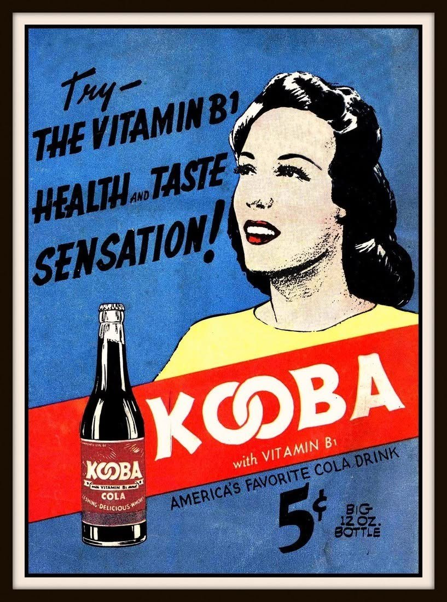
“Try — The Vitamin B1 Health and Taste Sensation!” Full-color house ad, Fox Features comics, 1941. Kooba’s big pitch was health: Vitamin B-1 had only just become available and was making newspaper headlines, so Fox sold his cola as a tonic — a big 12-ounce bottle for the same 5¢ as a small Coke. Gallery Feature No. 1.
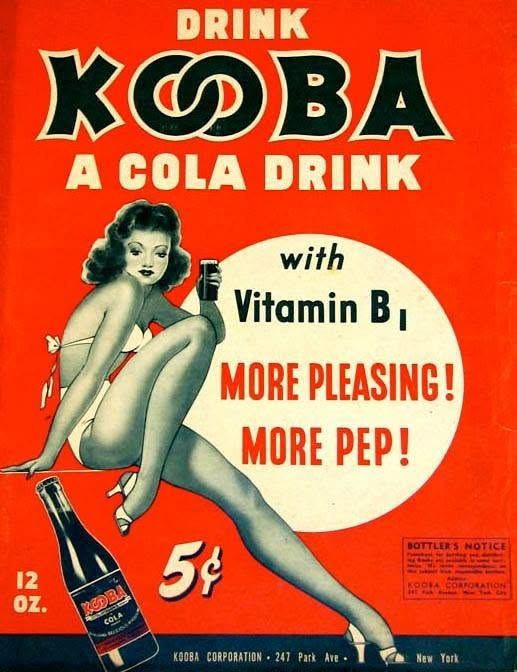
“More Pleasing! More Pep!” The bottler-facing version, carrying a Bottler’s Notice from the Kooba Corporation, 247 Park Avenue, New York — and the Kooba Girl herself in her white two-piece, glass in hand.
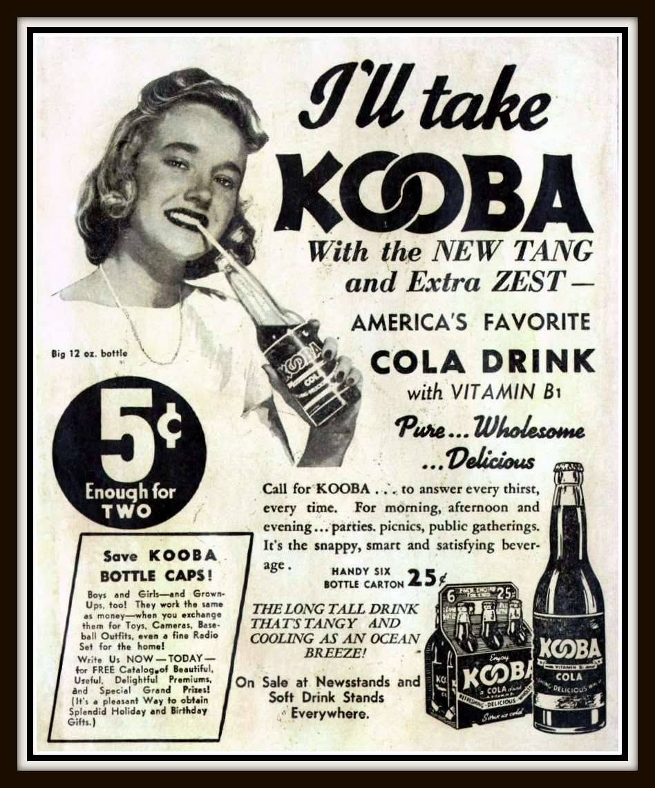
“I’ll Take KOOBA — With the New Tang and Extra Zest.” January 1941. The photo-model ad: a big 12-ounce bottle, 5¢ “Enough for Two,” a six-bottle carton for 25¢ — and the first push to save bottle caps for prizes.
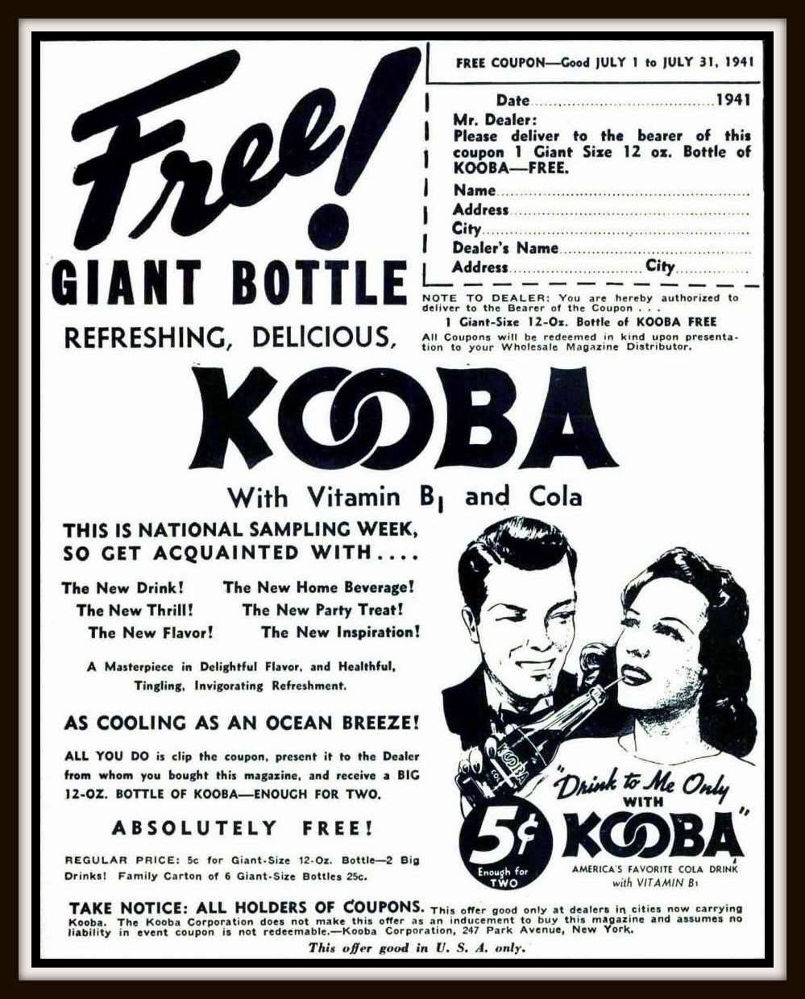
“Free! Giant Bottle.” July 1941 — National Sampling Week. Clip the coupon, hand it to your dealer, and walk out with a free 12-ounce Kooba. The fine print limits the offer to “cities now carrying Kooba” — a shorter list than the ads implied.
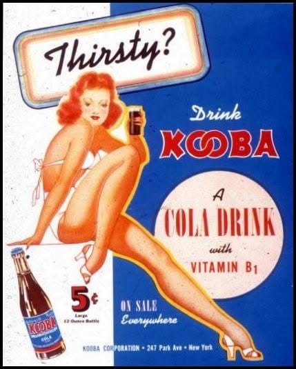
“Thirsty?” The Kooba Girl in her most famous pose, from Swank Vol. 1 No. 1 (August 1941), p. 66. This drawing is the museum’s canonical likeness of her.
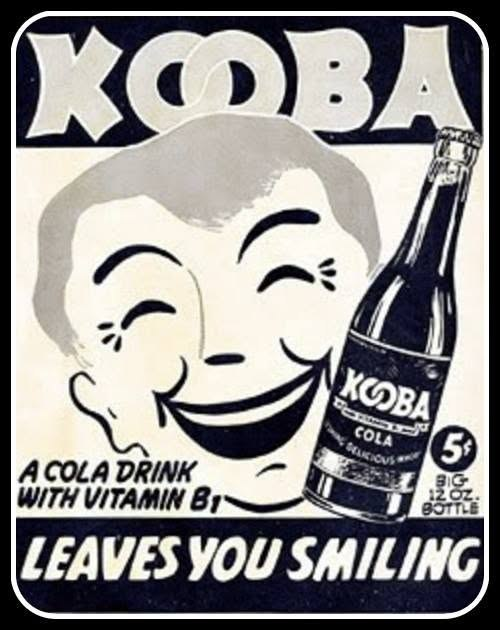
“Leaves You Smiling.” The cartoon campaign, 1941 — the same ad the Grand Comics Database indexes running in Wonderworld Comics #30 (October 1941).
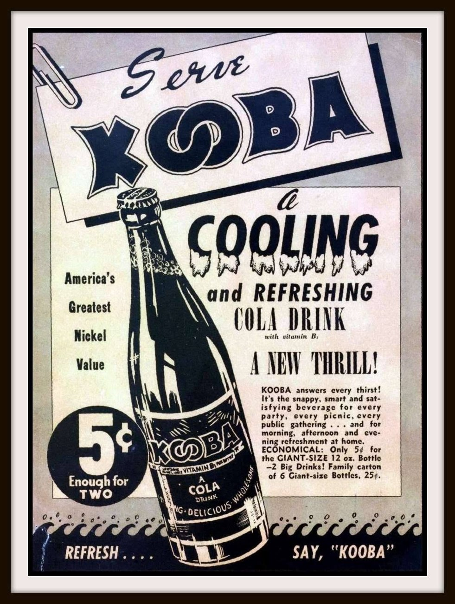
The Wonderworld Comics #26 ad (June 1941). By mid-1941 the campaign was everywhere in the Fox line — back covers, inside covers, and in-story plugs alike.
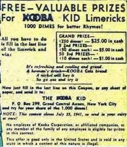
The Kooba Kid limerick contest. The mascot got his own strip ads and a limerick contest — write the last line, win prizes. Fox wasn’t just selling soda; he was building a fan club.
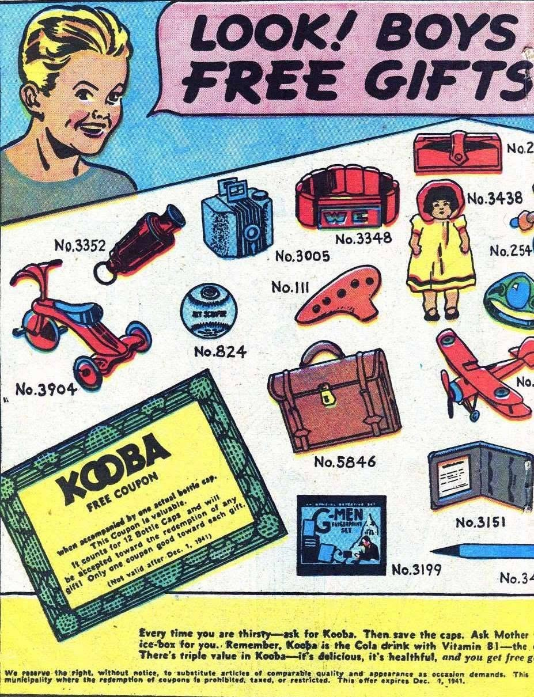
“Free Gifts for Kooba Bottle Caps.” The premium scheme: caps worked “the same as money” toward toys, cameras, baseball outfits, even a radio set — the full catalog pitch, aimed squarely at kids.
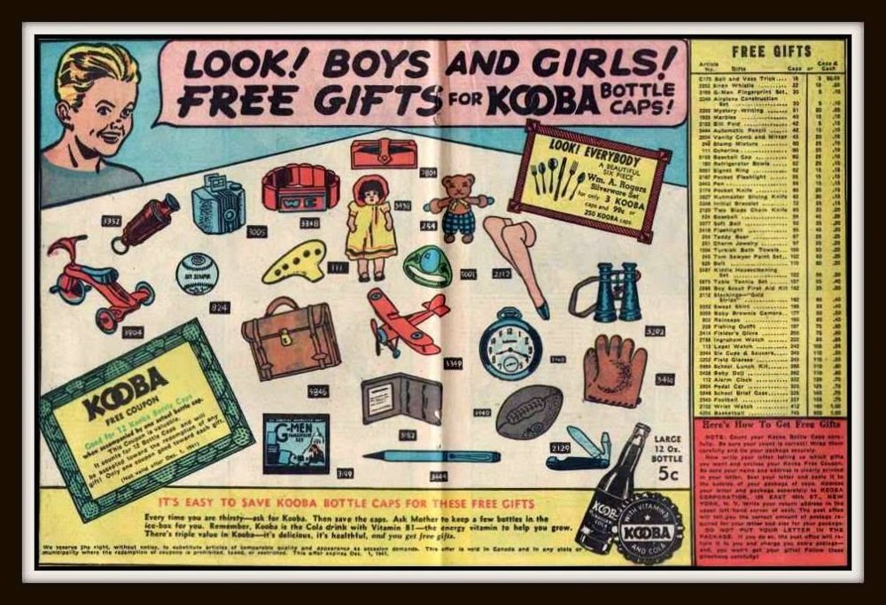
The catalog ad, Big 3 #3 (May 1941). Two-page spreads like this carried the whole Kooba universe: the soda, the caps, the prizes, the Kid.
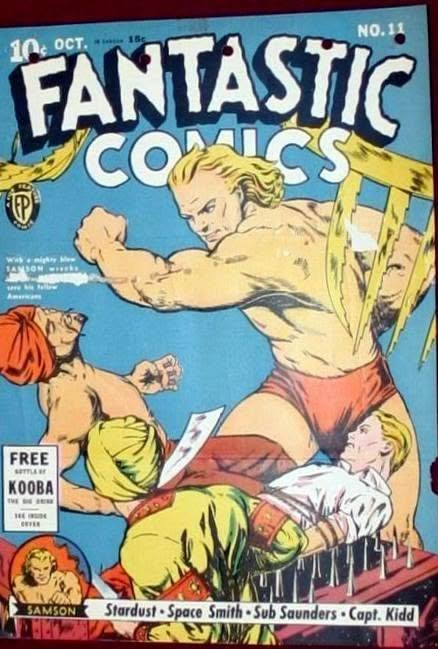
Fantastic Comics #11 (October 1940). Kooba made the cover itself — a cover-line tease months before most readers could have bought a bottle anywhere.
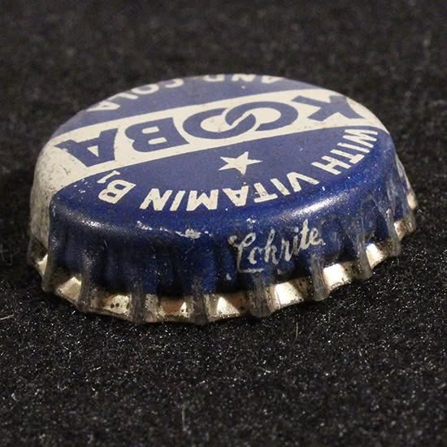
The cap. Found by a collector in 2021 among other circa-1940 caps: blue and white, cork-lined, crimped edge stamped “Eckrite.” The only documented physical Kooba artifact known — proof in stamped tin that the bottles were real.
More pieces are added as the archive is catalogued. Follow the daily feature on the museum’s channels: Facebook · Instagram · Threads